初期状態：Drawer 表示 / Workspace 展開
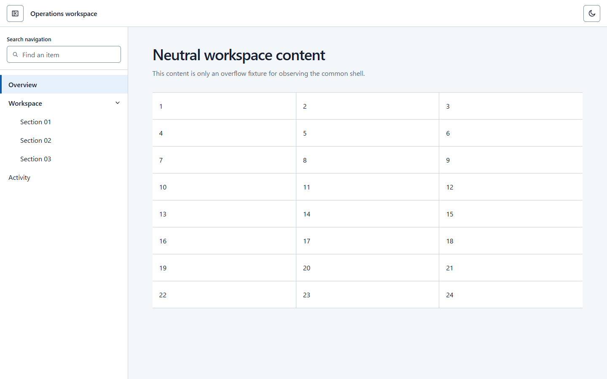
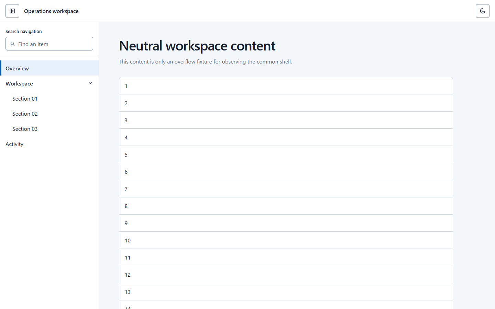
Drawer 非表示：Workspace は折りたたみのまま
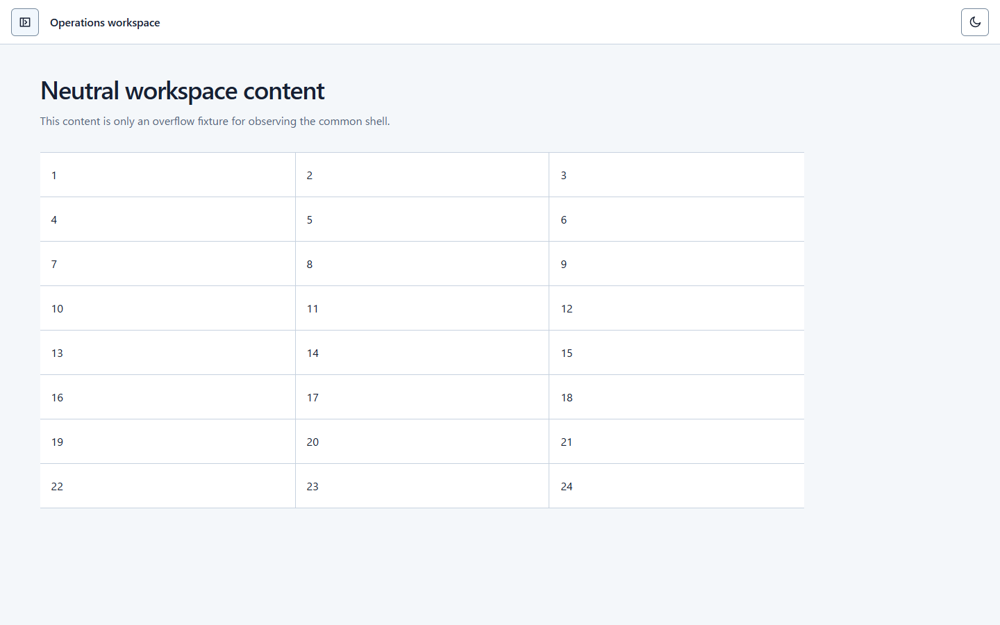
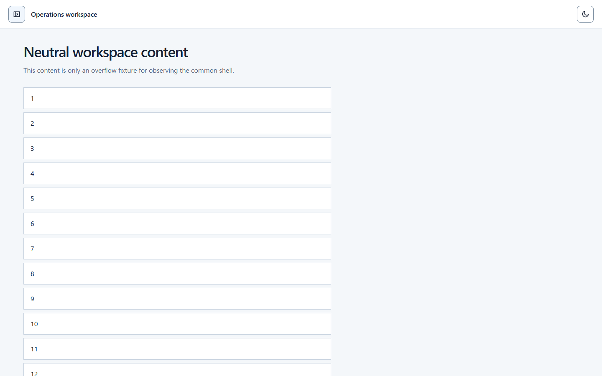
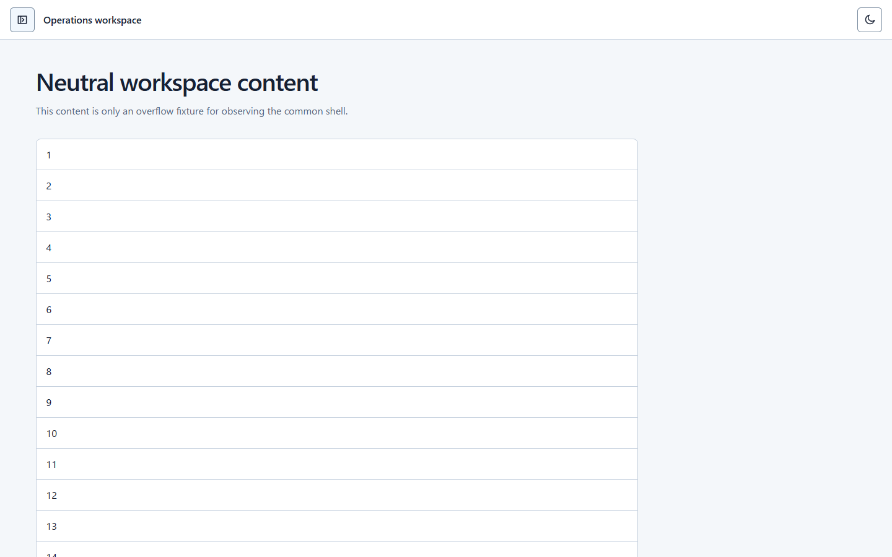
Drawer 再表示：Workspace は折りたたみのまま
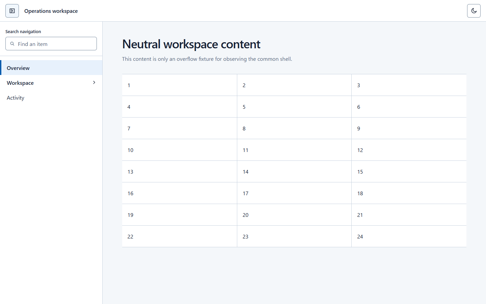
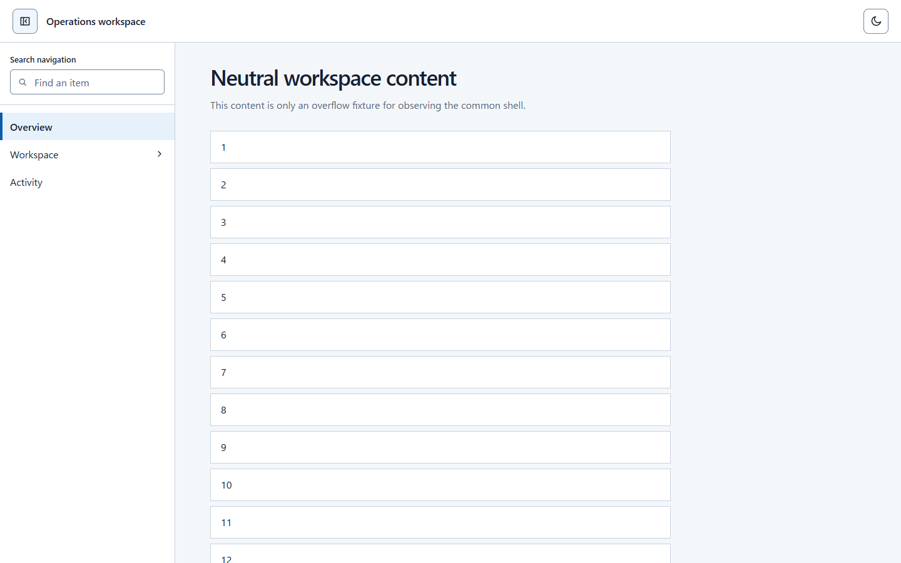
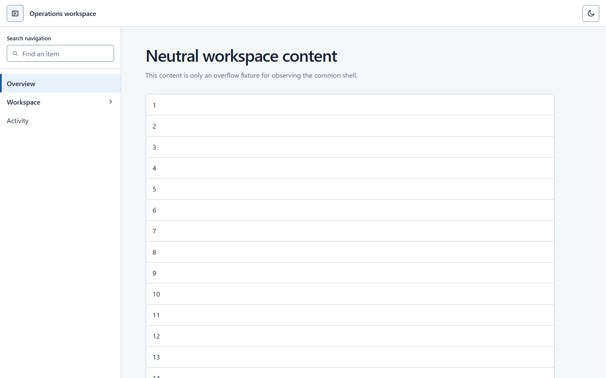
親行を再展開：子項目が戻る
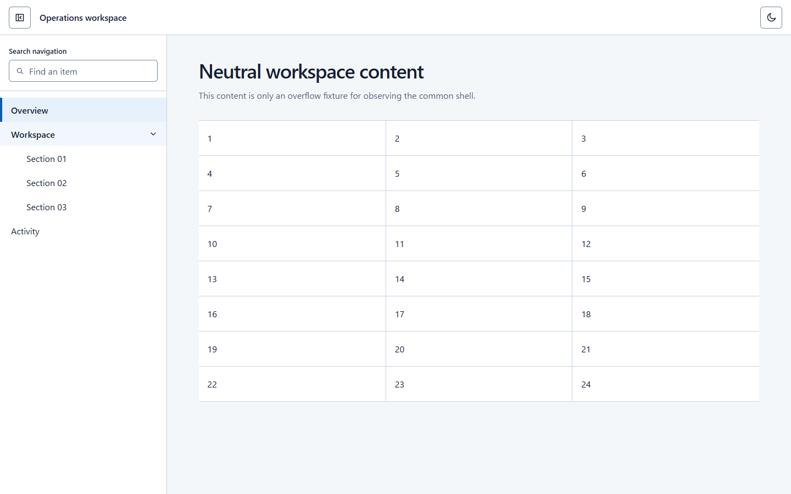
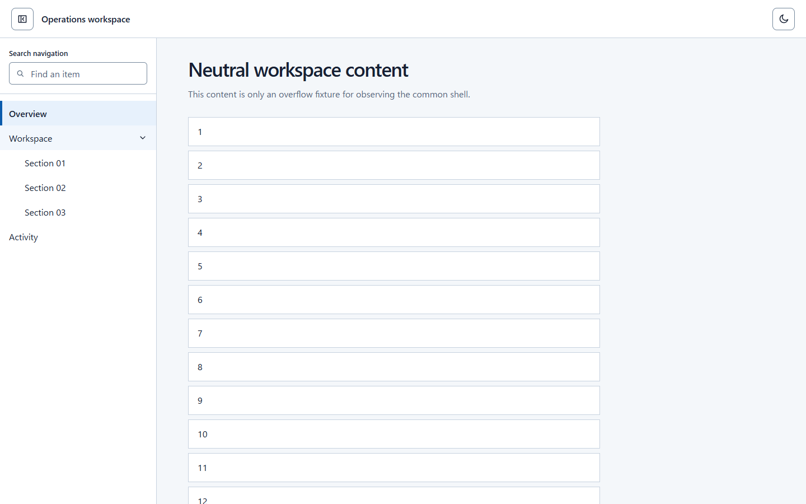
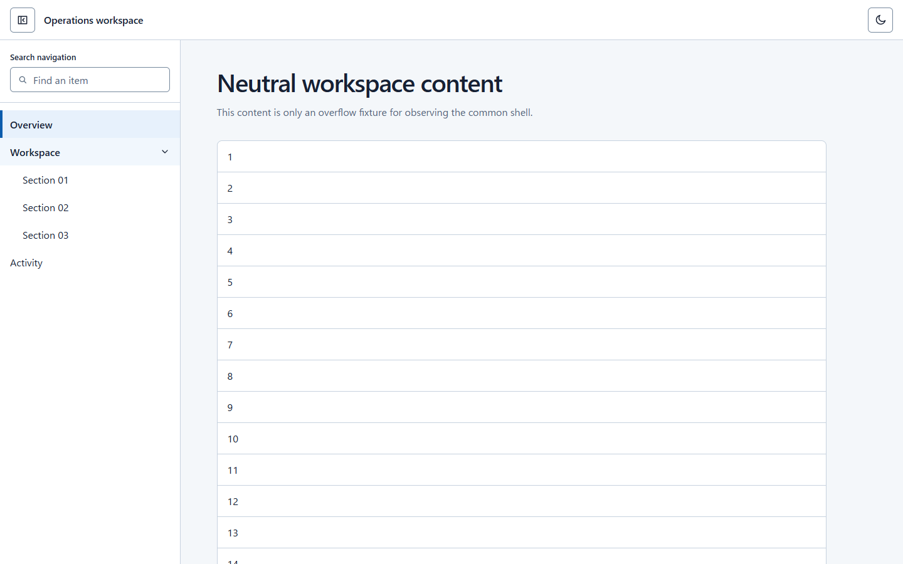
同一 viewport（1440×900）での固定 10 ステップ操作から得た、3つの独立 Run の比較です。
比較対象は Drawer の表示/非表示、親行の展開/折りたたみ、その状態独立性、Activity が leaf であることです。DOM、CSS、タスク領域のレイアウトは比較対象ではありません。










